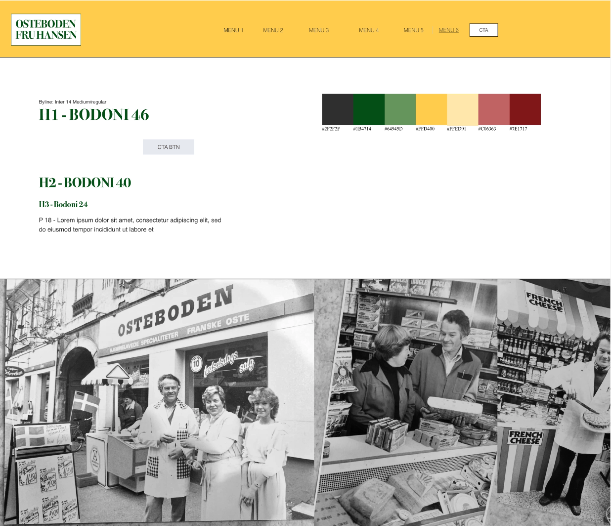
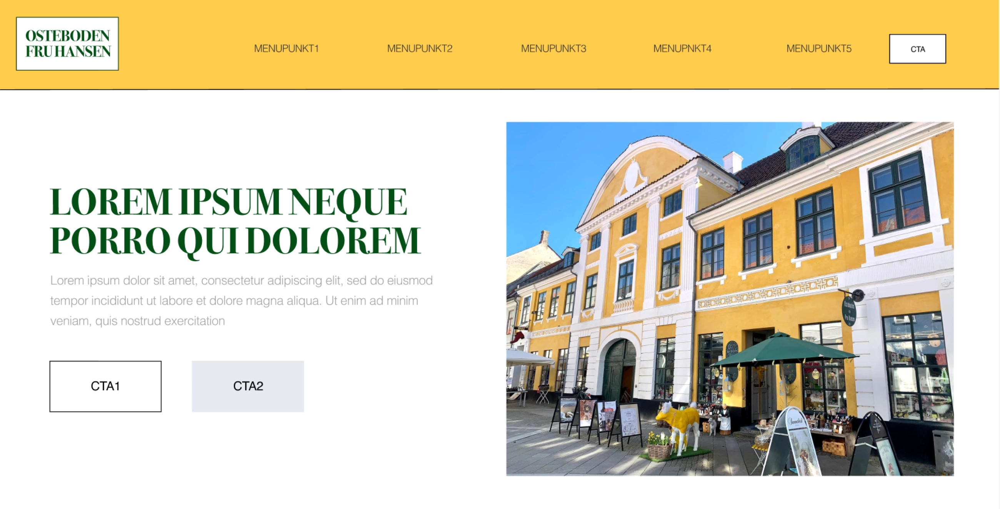

TEMA 3
GRUNDLÆGGENDE UX/UI
I dette tema blev vi introduceret til UX/UI konventioner, og fik en indsigt i samspillet mellem brugergrænseflader og brugere. Vi blev derved introduceret til metoder, teorier og værktøjer som kan benyttes til research, design og
brugertests.
Forløbet bestod af én opgave: Emnesite. Vi fik til opgave at lave en hjemmeside fra bunden ud fra et selvvalgt emne, og tage de metoder, teorier og værktøjer i brug som vi blev introduceret til i temaet. Jeg valgte at lave et redesign af
ostebutikken og specialforretningen Osteboden Fru Hansens hjemmeside.
EMNESITE
03.01.01
I arbejdet med mit Emnesite har jeg anvendt forskellige metoder og værktøjer, som har hjulpet mig gennem hele processen fra research og idé til færdigt produkt. Jeg har blandt andet brugt observation og interviews til at forstå
målgruppen, udviklet user stories og skabt et UX storyboard for at få indsigt i brugeroplevelsen.
Derudover har jeg lavet wireframes, prototyper og moodboards for at udforme og visualisere designet. Styletiles har jeg brugt til at skabe en klar visuel retning, mens skitser og Crazy 8 har hjulpet mig med at generere ideer til
layoutet. Lightning demos og logbog har hjulpet med inspiration og dokumentation, og jeg har udført tests som heuristisk-test, Lighthouse-test og survey-test for at undersøge mine designbeslutninger og brugervenlighed.
Nedenfor vil jeg demonstrere et par af de værktøjer og metoder, vi har lært i dette tema, som jeg har anvendt i designprocessen til at udvikle mit emnesite.
WIREFRAME
Vi blev i dette tema introduceret til wireframes som er en metode der bruges i designprocessen til at strukturere og planlægge layoutet af en hjemmeside. Det er en lavdetaljeret model som fokuserer på placering af indhold på en side, men uden at gå i detaljer med typografi, billeder og farver.
EKSEMPEL PÅ WIREFRAME
På nedenstående billede ses en wireframe for mit Emnesites forside. Jeg lavede wireframes inden jeg startede på prototyperne for at planlægge og strukturere indholdet og layoutet på siden, og de fungerede derfor som en skabelon for prototyperne.

Jeg valgte en simpel navigation i toppen for at gøre det nemt og intuitivt for brugerne at finde rundt på siden. Derudover indeholder min forside mange billeder, herunder et stort billede af butikken som det første visuelle element. Det
valg har jeg truffet for at skabe en stærk visuel appel og give brugerne et indblik af atmosfæren i butikken som det første.
Gennemgående for alle siderne har jeg valgt at bruge mange billeder for at visualisere produkterne og præsentere dem på en indbydende måde. Jeg har opbygget layoutet i grids for at skabe struktur og orden, hvilket gør det lettere for
brugerne at navigere rundt på siden. Mit valg af grids understøttes af gestaltlove som nærhed og lighed, der hjælper med at gruppere relaterede elementer og skabe en klar visuel sammenhæng på siderne.
På nedenstående billede ses et eksempel på et grid på mit Emnesite.

STYLETILE
Vi blev også introduceret til styletiles som er en metode inden for designprocessen. Styletiles bruges til at præsentere og definere de visuelle retningslinjer inden for et projekt. Fx. farvepalette, ikoner, teksturer, typografi og værdiord.
EKSEMPEL PÅ STYLETILE
På nedenstående billeder ses styletiles for mit Emnesite. Jeg tog udgangspunkt i de farver som er fremtrædende på den fysiske butiks facade, da det hjælper med at skabe en visuel sammenhæng mellem den fysiske og digitale oplevelse. Det giver et genkendeligt udtryk der reflekterer butikkens stil og atmosfære.
 Jeg valgte at bruge en gammeldags font til overskrifterne og en moderne font som Helvetica til brødteksten for at skabe en visuel balance mellem tradition og modernitet. Jeg fokuserede på de to layoutprincipper hierarki og kontrast. Ved at vælge en gammeldags font til overskrifterne og en moderne font til brødteksten, skaber man et visuelt hierarki. Overskrifterne får mere opmærksomhed og bliver lettere at skelne fra brødteksten. Samtidig med at den moderne brødtekst giver en funktionel læseoplevelse. Man skaber også en visuel kontrast, som fremhæver overskrifterne og giver designet en visuel dynamik.